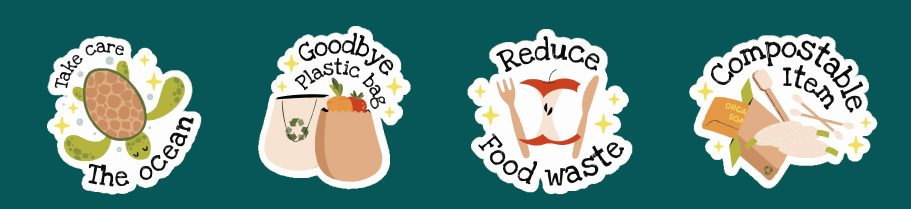

Apa itu “Zero Waste Lifestyle”?
Di era modern ini, sampah telah menjadi permasalahan yang kian mendesak. Sadarkah Anda bahwa kebiasaan konsumsi dan gaya
hidup kita berkontribusi besar terhadap tumpukan sampah yang menggunung? Zero Waste hadir sebagai solusi. Sebuah filosofi
dan gaya hidup yang mengajak kita untuk mengurangi dan menghentikan produksi sampah seminimal mungkin. Ini bukan sekadar tren,
tapi komitmen jangka panjang untuk menjaga kelestarian bumi.
Mengapa Zero Waste penting?
Sampah yang tidak terkelola dengan baik dapat mencemari tanah, air, dan udara, serta mengancam kesehatan manusia dan satwa.
Plastik sekali pakai, misalnya, sering berakhir di lautan, membahayakan kehidupan laut. Dengan mengurangi produksi sampah, kita
membantu melindungi ekosistem, mengurangi emisi gas rumah kaca, dan meminimalkan penumpukan sampah di tempat pembuangan akhir (TPA).
Manfaat Zero Waste
1.Memperlambat Perubahan Iklim: Mengurangi emisi gas rumah kaca yang berasal dari pengolahan sampah berkontribusi pada upaya memerangi pemanasan global.
2.Penghematan Biaya: Mengurangi pengeluaran dengan membeli lebih sedikit barang sekali pakai dan lebih banyak barang yang dapat digunakan kembali atau diperbaiki.
3.Kesadaran Lingkungan: Meningkatkan kesadaran dan pemahaman masyarakat tentang dampak lingkungan dari sampah dan pentingnya pengelolaan limbah yang bertanggung jawab.
4.Pelestarian Ekosistem: Melindungi satwa liar dan ekosistem dari bahaya sampah plastik dan bahan kimia beracun yang dapat mencemari habitat alami mereka.
5.Kepuasan dan Kebanggaan: Mengetahui bahwa Anda berkontribusi pada masa depan yang lebih berkelanjutan bisa memberikan kepuasan dan rasa bangga tersendiri.
Bagaimana memulai Zero Waste?
Memulai gaya hidup zero waste tidak harus sulit. Langkah-langkah sederhana seperti membawa tas belanja sendiri,
menggunakan botol minum yang dapat diisi ulang, dan mengompos sisa makanan bisa membuat perbedaan besar.
Selain itu, mengurangi konsumsi barang-barang yang tidak perlu, memilih produk dengan kemasan minimal atau tanpa kemasan,
dan memperbaiki barang yang rusak daripada membuangnya adalah cara efektif untuk mengurangi limbah.
Baca selengkapnya mengenai “5 Tips mudah untuk memulai Zero Waste Lifestyle”.